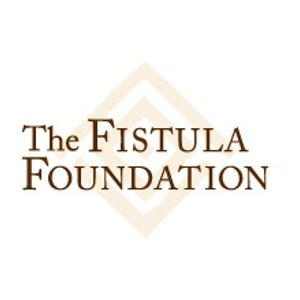
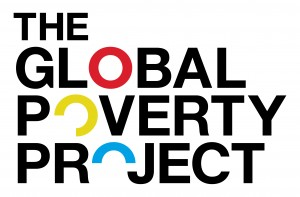

What could be better than pairing good music with good causes? Some of our favorite non-profits and organizations talk about their good work and the artists that inspire them.
Heather Korpella, Executive Director of Chicago Gateway Green
Chicago Gateway Green is a 501(c)(3) non-profit organization dedicated to greening and beautifying Chicago’s expressways, gateways, and neighborhoods. It was founded on the belief that beauty and sustainability go hand in hand.
{kind=link}
Gateway Green has improved Chicago’s communities through three key initiatives: the Expressway Partnership Program that transforms city roadways into landscaped parkways by maintaining more than 100 gardens along Chicago’s major expressways, thereby reducing air and noise pollution, the International Sculpture Program that beautifies gateways through the installation of permanent, international art, and the Tree Partnership Program that transforms vacant land into tree-filled green spaces through large-scale volunteer tree plantings.
Over the past 27 years, Gateway Green and its partners have helped improve both the local environment and quality of life for millions of Chicagoland residents and visitors. As part of the Illinois Transportation Enhancement Program, hundreds of new trees and tens of thousands of new shrubs will improve air and water quality, reduce the urban heat island effect, reduce noise pollution, and restore Chicago’s natural beauty. Planting is set to begin in fall 2013, so look out for its upcoming greening and beautification efforts!
Heather Korpella Executive Director
{kind=link}
Definitely a long-time favorite amongst several of us, Band of Horses’ songs always make me happy, so much that their song “No One’s Gonna Love You” from the “Cease to Begin” album will be the song at my upcoming June wedding that my fiancé and I will first dance to as husband and wife. I love Ben Bridwell, the lead vocalist’s voice, it’s uniquely peaceful and pretty.
{kind=link}
Greg Pekarsky Associate Board President
{kind=link}
My favorite artist is Eminem. His music is well thought out however always delivers a fun vibe. Plus he’s a Detroit dude, like yours truly. Eminem has never changed under the pressure of the public. His rap music is the best!
{kind=link}
Allison Neuman Landscape Operations Manager
{kind=link}
Originally from Alabama, this sibling trio is typically categorized as country, though their rock and pop undertones create a truly unique sound. Reid and Neil grew up as roadies for their older sister, eventually joining her on stage and forming a band together in 2005. Lead singer Kimberly has a powerhouse voice, while Reid plays bass and Neil switches off between drums, mandolin, and accordion. Their first big hit, “If I Die Young,” is still one of my favorites — it’s soft, beautiful, and poetic. The Band Perry released their sophomore album “Pioneer” in April. “Better Dig Two” and “Done” are insanely addicting and quickly transforming the sibling trio into a crossover sensation.
{kind=link}
Karrie Teel Events & Marketing Manager
{kind=link}
I fell in love with Of Monsters & Men when I heard “Little Talks,” and while “Lakehouse” might be my new fave, now I can’t get enough of any of their folky pop music. Who would’ve thought such great tunes would come from Iceland? I can’t get enough of their voices, and I think it’s interesting that many of their lyrics are based on serious topics, but their songs are still fun and upbeat. I’m always in a good mood after listening to them, and I can’t wait to see them live in Chicago!
{kind=link}
Asma Kadri Events & Marketing Intern
{kind=link}
My favorite band at the moment is Metric. I saw them live at the Vic this past year after the release of their new album, “Synthetica” and they rocked the venue with their incredible energy. Their music is smart, upbeat and thoughtful. The band has been around for a while and their lead singer, Emily Haines, is one of the most talented, inspirational, and awesome women ever. She plays piano, guitar, synthesizer, tambourine, all the while singing with a gorgeous voice. Every song on “Synthetica” makes me want to sing out loud and dance, which is problematic when I listen to it in public.
{kind=link}
Kate Grant, Chief Executive Officer of The Fistula Foundation
The Fistula Foundation works to raise awareness of and funding for the treatment of obstetric fistula, a childbirth injury caused by obstructed labor in countries where women too often give birth at home, without access to trained medical help. Obstetric fistula renders a woman incontinent, which can ruin her life: her husband often leaves and her family and community too frequently abandon her. But, through the $450 fistula repair surgeries that we fund, a woman’s health can be restored and she can live a long, happy and productive life.
{kind=link}
Kate explains her job:
No woman should live a life of misery and isolation simply for trying to bring a child into this world, and like so many women who find Fistula Foundation because they suffered labor complications, I had one, too. When my son was born, I had to have an unscheduled C-section to deliver. Had I instead given birth in countries where we work, where emergency obstetric care is not readily available, I could have developed an obstetric fistula that would have left me incontinent and in need of the $450 fistula repair surgeries we provide. So, this is a personal issue for me.
{kind=link}
In terms of my role here, with a team of only five, I get to do a lot! Since starting as the Fistula Foundation’s first CEO in 2005, I’ve expanded the organization from funding one site in one country to 38 sites across 19 countries. So I stay quite busy keeping in touch with what’s happening in the field, traveling to sites in African and Asia, so we can channel our resources accordingly to treat as many women as possible. Because obstetric fistula was eradicated in the US by the early 20th century – thanks to improvements in maternal care and availability of C-sections – not a lot of people in the U.S. have even heard of our issue. So I also spend a great deal of time on the road, speaking at fundraisers or to groups who want to learn about obstetric fistula – and more importantly, join us in doing something about it!
“Sisters Are Doin’ it for Themselves” is the unofficial theme song of the Fistula Foundation! We’re an all female staff, addressing a tragic childbirth injury that women have been struggling with literally throughout time. Our team of sisters is trying to take care of our sisters in Africa and Asia.
{kind=link}
I adore Bonnie Raitt. Her music speaks to my heart like a kind and dear friend. For me, no one does a better job of addressing the challenges of loving fully, imperfectly with tender hearts in an uncertain world…facing the joy, the hurt, the fears that are part of truly loving and that make life rich, hard, worth living…she’s the most soulful singer I know…”cry on my shoulder” she sings. Sometimes that’s what we all need, a good friend and a shoulder to cry on.
{kind=link}
Bruce inspires me in so many ways. His music is about the people who aren’t on the covers of magazines, about people who struggle – much like the women Fistula Foundation works to treat. “Thunder Road” is a lifelong favorite – he sings of great possibility, of Mary who “ain’t a beauty, but hey you’re all right,” and tells us “there is magic in the night.” For me there’s always been magic in that song, about choosing to seize the possibility of happiness, connection and adventure in the face of fear and imperfect opportunity. More recently his song “We take care of our own” moved me deeply. I heard him perform that song here in San Jose last year and while he’s singing about Americans, for me that song made me think of all of the incredible big hearted donors that help us help women in need a world away. For our tribe of people, taking care of our own means taking care of all members of the human family — be they African or Asian – the heart’s need to help doesn’t stop at the border. I love that song.
{kind=link}
His music soothes my sometimes flagging spirit, and yet also gives the gift of energy and joy…it’s a great combination. A little bit of Redman and a good glass of wine can be a great end to a tiring day.
{kind=link}
I lived in Senegal during graduate school in the early1990s, where I was introduced to Youssou N’Dour, and had the opportunity to see him in concert. It was incredible. He’s the heart and soul of Africa for me. Every time I hear something from his “Eyes Open” album, I’m transported back to Senegal and a time rich with possibility and Senegal on the verge of transformation.
{kind=link}
Stef McDonald, Managing Editor of Content for Global Green USA
Global Green USA is a humanitarian environmental group dedicated to helping the places, people, and the planet in need through catalytic projects, transformative policy, and cutting-edge research. Global Green USA’s signature programs include greening affordable housing, schools, neighborhoods, and cities as well as rebuilding communities — such as New Orleans and areas of New York and New Jersey — who have suffered from the impacts of climate change, sea level rise, and environmental degradation. Global Green USA is the US affiliate of Green Cross International, which was founded by President Mikhail Gorbachev in 1993 to foster a global value shift toward a sustainable and secure future.
Stef explains her job
{kind=link}
I spread the word about Global Green USA’s work greening homes, schools, and communities. We keep supporters in the loop with website updates, email blasts, blog posts, photos and videos, and social media messaging — so I’m the blogger, tweeter, and writer of program and project summaries and updates, working with staffers to share news, work highlights and successes. We engage supporters and followers to be part of the process, too. The Citizen Entrepreneur Contest we launched last year enlisted people to submit their green community projects for a chance to win funds to advance their work. The current “Citizen Sandy” search awards micro-grants ($5000, $1500 and $1000) for greener building ideas to help the New York and New Jersey communities devastated by Hurricane Sandy. Our Green School Makeover Competition will reward a school with $75,000 and free technical assistance for green school upgrades.
{kind=link}
I heard one song by Local Natives before I saw them perform at Coachella a few years ago and then fell for them completely, marveling at how their full and lush sound — and their harmonies — filled the tent. Their new album, “Hummingbird,” is filled with more energetic songs that burst with brightness. The lovely chorus of oooh’s in “Breakers” makes me swoon.
{kind=link}
This longtime favorite of mine has been making consistently amazing music for 30 years (!). They’re indie rock masters at making fuzzy guitar noise sound beautiful and their impact isn’t lessened when they strip it down and sing in sweet whispers. I heard “Ohm,” a new song from their latest, “Fade” while driving in the car and was excited to find out who this new band was before I realized it was them. The fact that their new album is called “Fade” can only be a joke – there’s nothing dim or dull about the Yo La Tengo I know.
{kind=link}
The Shins make grown-up pop-rock that doesn’t make me feel boring and old. But that’s selling them short: James Mercer and his bandmates deliver lovely and lasting songs that sound nostalgic but you just know they’ll be even better down the line. Many of the songs have a haunting quality that resonates with me and every record has at least one perfect song I’ll never tire of hearing and singing along with (their latest, “Port of Morrow,” has “Simple Song” and “September”) and I always go back again and again to hear the lyrics. You hear a lot about songwriters being described as poets, but I hear Mercer’s lyrics like those from a great novelist.
{kind=link}
The girl in me that’s a little bit of country and a little bit rock and roll is always happy and at home listening to Wilco. For all the twists and turns in the band’s journey, I’ve kept pace and embraced them, from the melodic radio-ready gems to the messy and crazy tracks filled with crackly, piercing noises. Their most recent album, “The Whole Love,” feels to me like their best, conveying richness and depth and sounding so, so freaking good. I keep going back to two songs, the “Art of Almost” and “One Sunday Morning” — both happen to be lengthy, sweeping and emotionally charged. I tip my hat to songwriter Jeff Tweedy’s songwriting skills. More, please.
{kind=link}
Florence + the Machine makes music that’s majestic. I love the drama, with songs about salvation, breaking down, and being forsaken. I love the contrast of darkness and light and the hear-me-roar, badass songs that sound like rallying cries (“it’s hard to dance with the devil on your back, so shake him off” from “Shake It Out”). It’s impossible for me to resist being swept away by Florence’s stunning voice (especially with all of the dramatic sea references). Her voice and the lyrics make her sound like she’s from another time. I put her in the Stevie Nicks camp: fierce, mysterious, all leather and lace. She’s a force to be reckoned with. And the orchestral arrangements? Bring on the chills.
{kind=link}
Michael Trainer, U.S. Country Director for The Global Poverty Project
Global Poverty Project is an education and advocacy organization working to build a movement to end extreme poverty within a generation. In my lifetime, extreme poverty (the condition whereby people live under the equivalent of $1.25 a day for all of their needs) had been halved. That’s an incredible achievement, but there are still 1.3 billion people living in extreme poverty globally. We believe everyone deserves an opportunity to live a healthy and full life, and we’re working towards that reality.
{kind=link}
Michael explains his job
I work to build the movement here in the United States, largely through creative campaigns like Live Below the Line, which challenges people to live on a $1.50 a day for five days, not only to change their perspective on the issue, but also to raise critical funds for organizations like UNICEF. I also direct creative content for our biggest effort to date, the Global Festival.
Michael’s Top Five Artists of the Moment
 I saw them at Coachella (Goldenvoice’s Bill Fold was an early believer in the Festival and crucial to our success) and again at the taping of “Saturday Night Live” and they blew my mind. Drummer Patrick Carney backed us when we were having a lot of trouble signing on artists. They are huge supporters and next to Neil Young I can’t think of anyone I’d be more excited to see on the Great Lawn for the Global Festival.
I saw them at Coachella (Goldenvoice’s Bill Fold was an early believer in the Festival and crucial to our success) and again at the taping of “Saturday Night Live” and they blew my mind. Drummer Patrick Carney backed us when we were having a lot of trouble signing on artists. They are huge supporters and next to Neil Young I can’t think of anyone I’d be more excited to see on the Great Lawn for the Global Festival.
“Boys and Girls” is one of the best albums of 2012 as far as I am concerned. Soul is timeless, and lead singer Brittany Howard has got it.
{kind=link}
“For Emma, Forever Ago” has got to be one of the best records of all time. Lock yourself in the woods and sing your way out of heartbreak, I love it. Did the same in Yosemite some time back. The self-titled second album and specifically the “Holocene” video Nabil directed is also one of the most beautiful things I’ve seen to date, it reminds me of the power of song and image together and its transformative possibility. Film and video done well together inspires me to keep pushing the limits of what we can achieve, I think it’s foundational to the emotive experience at the core of any movement.
I had the great pleasure of seeing Radiohead at Roseland this past year. Hearing “Give Up the Ghost” took me to a whole other place. I nearly lost it when I got to meet Thom York after the show and speak to him about one of my favorite videos — their “All I Need” video — and the anti-human trafficking campaign with MTV- an amazing example of music bringing a social issue to audiences in new ways.
{kind=link}
I met K’Naan speaking at the Millennium Campus Conference in Cambridge and he shared a reflection from his recent trip to his homeland of Somalia. He said everyone asked him, “How can we help?” His response stayed with me. He said, before you go out in the world trying to fix things, look within and ask yourself what is driving you. In committing to work that is about service I think it’s important we work ourselves out of a job instead of perpetuating systems or worldviews that are more about self than service. I am continually asking myself why. K’Naan reminded me to continue to ask the question, and so I meditate to make sure I keep operating from the right place.
{kind=link}
To learn more about Global Festival and win tickets, click here.
Ryan Lewis, 826 National Director of Research and Evaluation
826 National is a network of eight writing and tutoring centers across the U.S. that offers a variety of programs including after-school tutoring, in-schools projects, field trips, creative writing workshops, and student publishing opportunities. They provide under-resourced students, ages 6-18, with opportunities to explore their creativity and improve their writing skills. Its mission is based on the understanding that great leaps in learning can happen with one-on-one attention, and that strong writing skills are fundamental to future success. Last year our tutoring centers — located in Ann Arbor, Boston, Chicago, Los Angeles, New York, San Francisco, Seattle and Washington, DC — served more than 29,000 students.
{kind=link}
826 National was co-founded in 2002 by author Dave Eggers, and through Dave we’ve connected with numerous musicians who have generously given their time to help spread the word and fundraise for our programs. Neko Case auctioned off a car for us, She & Him have donated the proceeds from a Christmas album, and The Submarines have led a songwriting workshop for our students to craft tunes that were eventually performed by Fiona Apple, the Cold War Kids, and more. We’re incredibly lucky to be connected with such caring and wonderful individuals.
Ryan explains his job
I focus on studying the impact of our programs, both to showcase their successes and ensure their quality in changing young people’s lives. We look at our programs through a variety of lenses to understand exactly how we’re serving students and teachers, what the impacts are, and how we can improve our services. I also keep the organization up-to-date on research in education reform that supports or informs our work and I share our findings with the education reform community.
Ryan’s Top Five Artists of the Moment
Thao with the Get Down Stay Down
Besides the bonus points for being a dedicated homework tutor at our San Francisco chapter 826 Valencia, Thao is one of my favorite songwriters and live acts around. Her lyrics are soulful, interesting, and honest, her voice is grabbing, and I love the hootenanny vibe of the Get Down Stay Down’s instrumentation when they really get going. She can also beatbox a mean “Push It” by Salt N’ Peppa. I recommend it all, but “Know Better, Learn Faster” and “Feet Asleep” are two of my favorites.
{kind=link}
I’ve always loved the high-octane punk acts of the ‘70s and ‘80s, and I’ve been going back to my copy of “Is This Real?” on the regular recently. The band’s four chord chug-a-lug and Greg Sage’s howl fall somewhere between Glenn Danzig’s Misfits and a good Devo record in my book, which is a bizarrely genius line to walk. I really like “Telepathic Love” and “Mystery” from that record.
{kind=link}
Pokey LaFarge & the South City Three
I’m a big fan of what Jack White is churning out with the Third Man Records lineup, and Pokey and his gang top the list for me. It’s old-timey Americana through and through, as Pokey sells you on love, gunfights, whiskey drinking, and card playing with a beat-up banjo in hand and a suit your great-grandfather would admire. Try out “So Long Honeybee, Goodbye,” “Hard Times Come and Go”, or their contribution to the NPR Tiny Desk Series.
{kind=link}
Oh my, the new record, “Put Your Back N 2 It,” is a beautiful/painful/brave/haunting batch of songs that are amazingly minimal yet mighty. I know it’ll be hard to listen to them every time, and I can’t even imagine how hard it was to make them, but I just can’t stop. “Hood” has been stuck in my head for weeks now.
{kind=link}
I’ve always been a huge fan of Sam Cooke’s solo career (check out Live at the Harlem Square Club, 1963 for an unpolished taste of what that was like) but I just read a biography that chronicled his humble beginnings, early days of gospel success, crossover pop stardom, and grizzly death. Since reading it I’ve been digging through his early recordings and live performances with the Highway QC’S and the Soul Stirrers, both popular gospel groups of the time. Now knowing the back story in detail, it’s really interesting to listen to the conversion of a charming teenage gospel lead from Chicago into the electric, world famous King of Soul.
{kind=link}
John Travis, Drop in the Bucket Co-Founder/President
Drop in the Bucket constructs wells and sanitation systems at large rural schools in sub-Saharan Africa, enabling children — especially girls — to get an education and realize their full potential. Since it was founded by entertainment industry professionals in 2006, the Los Angeles- and Uganda-based non-profit organization has completed more than 150 projects in six African nations.
{kind=link}
John explains his job: I’m one of the founders of the organization and mainly deal with donors, fundraising and raising awareness. Although from the outside we may look like many of the other water charities, we are actually very different in the way we run our program. Our primary focus is helping children get an education. In the areas where we work, water is often a daily concern, and the task of fetching water each day is one that often falls on the girls. By building wells at schools we make it possible for girls to get an education too and we strongly feel that getting everybody educated is one of the most effective ways to help break the cycle of poverty that exists in these impoverished areas.
Editor’s note: Punk-rock icon Henry Rollins is a huge supporter of Drop in the Bucket and visited its projects in Uganda and Sudan. Check out his poignant and hilarious PSA here.
John’s Top Five Artists of the Moment
I must confess that I love this band — they combine the best elements of Black Sabbath and “My War”-era Black Flag heaviness with a guitar tone that recalls Matt Pike’s in the mighty Sleep, but with a finely honed sense of humor that comes across in a series of absolutely stunning music videos. As great as the videos are, it’s the music that keeps you coming back. Essential road-trip music that works almost as well when you’re stuck in LA traffic as when you just want to rock out.
{kind=link}
The British trio’s recent sophomore album “Sweet Sour” is a must-have record, the production, mix and performances are just perfect. The songwriting is that great kind of dirty rock and blues with perfectly executed harmonies that young British musicians seem to channel so well. Check out “Devil Takes Care of His Own” and title track “Sweet Sour.”
{kind=link}
The first time I saw BoD frontman Kyle Nicolaides perform, he walked on the tiny stage at the Silverlake Lounge and started mercilessly critiquing the audience. It wasn’t mean spirited, it was dry and funny. As you winced for the person he was skewering, you secretly wanted him to pick on you or one of your friends. But then he started playing and for the next 30 minutes, rock ‘n roll felt dangerous again. Backed by just a drummer, who I later found out had only rehearsed with him once, Kyle switched between guitar and keys playing both of them effortlessly and with total abandon. Since then he has found himself a permanent drummer and bass player and named the band Beware of Darkness. If you want to hear a 21-year-old channel Jimi Hendrix, Robert Plant and Otis Redding, check out the EP that comes out this summer.
{kind=link}
Dead Sara is a Los Angeles-based band with an all-male rhythm section led by two very driven and totally badass women. Siouxsie plays guitar and occasionally drums and Emily plays guitar and can scream into a microphone like she’s about to reduce it to tears. The band is often melodic and heavy in the same song. Their performances are electric, exciting and always memorable. Although I’m still waiting for them to capture the primal energy of the live show on a recording, you’d be crazy to not catch them on their upcoming Warped Tour dates.
{kind=link}
I’m going out on a limb here picking Jack White’s solo record without having actually heard the whole thing, but what I have heard is exceptional, so even if there are only three good songs on the record, it’s still worth buying just for those. I have to confess to being a huge fan, and the Dead Weather record has stayed on regular rotation in my car almost as long as the last record by The Kills or the Yeah Yeah Yeahs’ “It’s Blitz”, but after Jack’s performance on Saturday Night Live I went to Amazon and pre-ordered the CD practically before he played the last note.
{kind=link}
Picking just five acts is really tough, especially because there are so many more I could list. If these are a little too obscure and you’re looking for something great but a little more popular, check out The Kills, Awolnation, Lana Del Rey (I really don’t care if she wasn’t great on SNL, her voice is great and the record is really strong), the Delta Spirit, or Gotye, but I’m guessing you already know those acts and already made up your mind about them. Oh and check out New York’s Gonzo Jones — you can thank me later.
Bob Ferguson, Oxfam America’s Manager of Creative Alliances & Music Outreach
Oxfam America is an international relief and development organization that creates lasting solutions to poverty, hunger, and injustice. Together with individuals and local groups in more than 90 countries, Oxfam saves lives, helps people overcome poverty, and fights for social justice.
{kind=link}
Bob explains his job: “I work with artists, managers, labels, and other parts of the music industry to find ways to share Oxfam’s work with music fans, which enables us to build support and partnership for our work here in the U.S. and around the world. I work with artists like Coldplay, Radiohead, Arctic Monkeys, Flogging Molly, Wilco, OK Go, Deer Tick, State Radio, Spoon, and Cat Power, to name a few.
“I love interacting with our supporters and activists who inspire my work, having rock stars ask me to help them navigate the world of social justice and watching my colleagues develop and implement ideas that save lives. But my favorite thing about my job is when I hear that my work has allowed someone to feel like their voice is amplified and that our music outreach program has given someone the gift of empowerment. That’s better than a paycheck – no lie.”
Bob’s Top Five Artists of the Moment
Ben Sollee is a cellist and singer from Kentucky who combines folk, rock, hiphop, bluegrass, and classical elements to create a beautiful style all his own. He’s an incredibly engaging live performer, and it’s not uncommon to see people weepy with joy at his shows. He’s actually done entire tours by bicycle (he’s got an extra long bike that he can strap the cello case to!), is an activist on behalf of hunger and poverty issues, and is an outspoken opponent of mountaintop removal coal mining. He’s a guest on the most recent My Morning Jacket album, and is currently in the studio recording another album.
{kind=link}
These guys are an electro/guitar duo from New York City, whom a buddy of mine turned me on to at SXSW. I guess it would be easy to call them chillwave, but there’s much more going on than that. Extra catchy and poppy, yet somehow smarter sounding than their peers in that corner of the dance-rock space. Great music for the club or the car with the windows down. Super-nice dudes, too.
{kind=link}
Self-described “music to help kiss the doldrums away”, L.A.-based Superhumanoids create moody, atmospheric, dreamy pop that soothes and energizes all at once. They are the most organic-sounding electronic band I can think of, and vocalists Sarah Chernoff and Cameron Parkins play off each other in ways that few co-singers seem to do anymore. Their new album is due very soon, and I can’t wait.
{kind=link}
As these Brit-Pop icons have reformed and are playing shows in the States in April, it’s encouraged me to revisit their catalog and be amazed at how au courant their music sounds today. Has there been a better rave-up at the end of a pop song since Pulp’s “Common People”? Nope. I’ve got my ticket for their coming show at Radio City Music Hall sitting at the edge of my desk, and I smile with anticipation every time it catches my eye.
{kind=link}
Michael Kiwanuka is a singer/songwriter from London who is often compared to American soul legends like Otis Redding and Bill Withers, but carries a bunch of folk and jazz in his sack of influences, too. He’s got a steady, soothing delivery and style, and his sound is both retro and modern at the same time. His debut album, “Home Again”, has just been released, and is head and shoulders above the pack of British singer/songwriters currently competing against each other for the attention of music fans on both sides of the Atlantic. I caught his set at Stubb’s at SXSW, and as the woman next to me proclaimed when it was over, it was “absolutely lovely”.
{kind=link}